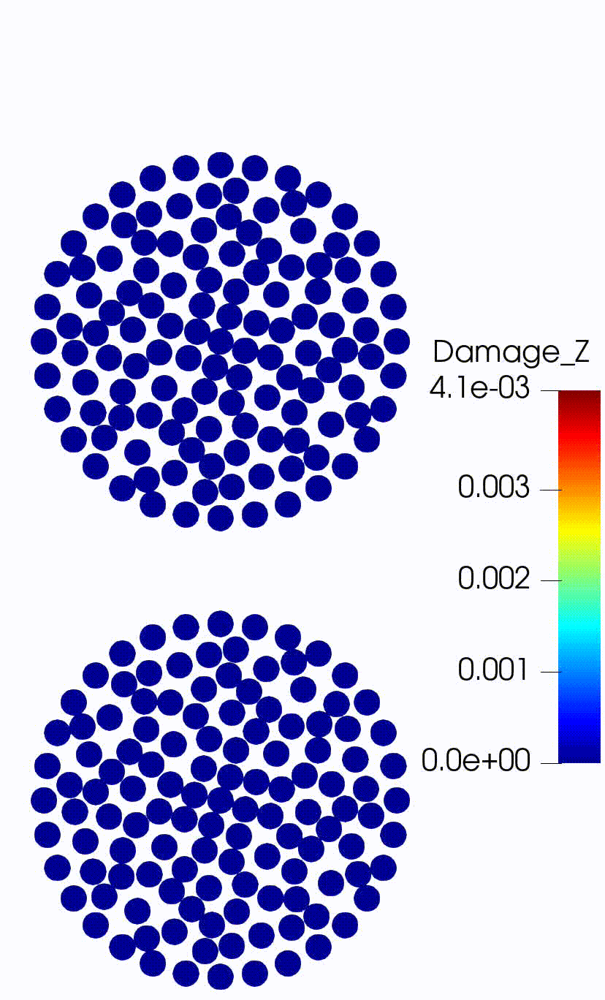
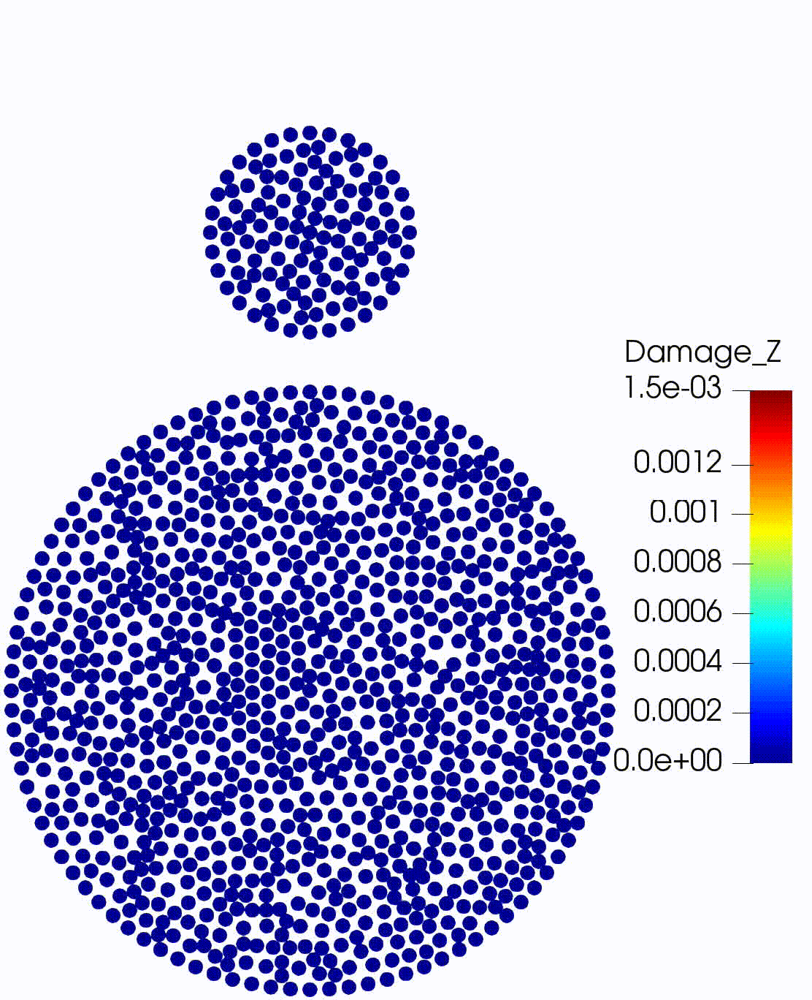

|
PeriDEM
0.2.0
PeriDEM--PeridynamicallyenhancedDEMmodelforgranularmedia
|
|
PeriDEM
0.2.0
PeriDEM--PeridynamicallyenhancedDEMmodelforgranularmedia
|

Implementation of the high-fidelity model of granular media that combines the advantages of peridynamics and discrete element method (DEM). The model has the following advantages over existing mechanical models for granular media:
For more details about the model and results, we refer to the paper:
Prashant K. Jha, Prathamesh S. Desai, Debdeep Bhattacharya, Robert P Lipton (2020). Peridynamics-based discrete element method (PeriDEM) model of granular systems involving breakage of arbitrarily shaped particles. Journal of the Mechanics and Physics of Solids, 151, p.104376. Doi https://doi.org/10.1016/j.jmps.2021.104376.
Download pdf here.
We have created channels on various platforms:
Doxygen generated documentation details functions and objects in the library.
We explain the setting-up of simulations in further details in tutorial. We consider two-particle test setup with non-circular particles and compressive-test to discuss the various aspects of simulations.
We next highlight some key examples. Further details are available in examples/README.md.
 |  |
|---|---|
| Circular without damping | Circular with damping |
 |  |  |
|---|---|---|
| Different materials | Different radius | Different radius different material |
 |
|---|
| Concave particles |
Setup for this test consists of 502 circular and hexagonal-shaped particles of varying radius and orientation inside a rectangle container. The container's top wall is moving downward at a prescribed speed, resulting in the compression of the particle system. The quantity of interest is the compressive strength of the media. The reaction force (downward) on the moving wall should increase with the increasing penetration of this wall; however, after a certain amount of compression of the media, the damage will initiate in individual particles, especially those connected by force chains, resulting in the yielding of the system. For more details, we refer to Jha et al. 2021
 |
|---|
| Compressive test simulation |
We consider mix of different particles in a rotating container. Particles considered include circular, triangular, hexagonal, and drum shaped. Particles come in large and small shapes (their sizes are purturbed randomly). In order to to introduce diversity of material properties, we considered large particles to be tougher compared to the smaller ones. Setup files are in examples/PeriDEM/attrition_tests
 | |
|---|---|
| Rotating cylinder (setup) | Rotating cylinder with center of rotation offset (setup) |
Complex container geometries can be considered as well. For example, the image below is from attrition_tests and includes rotating rectangle with opening and internal groves of different shapes. The rotating container with particles inside is contained within another rectangle which is fixed in its place.

The main implementation of the model is carried out in the model directory dem. The model is implemented in class DEMModel. Function DEMModel::run() performs the simulation. We next look at some key methods in DEMModel in more details:
This function does three tasks:
In DEMModel::init(), the simulation is prepared by reading the input files (such as .yaml, .msh, particle_locations.csv files).
Key steps in DEMModel::integrate() are
In DEMModel::integrateStep(), we either utilize the central-difference scheme, implemented in DEMModel::integrateCD(), or the velocity-verlet scheme, implemented in DEMModel::integrateVerlet(). As an example, we look at DEMModel::integrateCD() method below:
The key method in time integration is DEMModel::computeForces() In this function, we compute internal and external forces at each node of a particle and also account for the external boundary conditions. This function looks like
Above gives the basic idea of simulation steps. For more thorough understanding of the implementation, interested readers can look at demModel.cpp.
Core dependencies are:
Following dependencies are included in the PeriDEM library in external folder (see external/README.md for more details):
If all the dependencies are installed on the global path (e.g., /usr/local/), commands for building the PeriDEM code is as simple as
We refer to tools/README.md for further details about installing dependencies and building the library in different ubuntu releases.
We are trying to make PeriDEM MPI-friendly so that we can target large problems. We are moving in following key directions:
Taskflow to perform parallel for loops in a non-mpi simulation. In future, we will be interested in using multithreading combined with MPI to further speed-up the simulationsWe are looking for collaborators and HPC experts in making the most of available compute resource and performing truly large-scale high-fidelity granular media simulations. If any of the above future directions interest you or if you have new directions in mind, please do reach out to us.
In the past, PeriDEM library depended on large libraries such as HPX, PCL, Boost (explicitly dependence). We have put a lot of efforts into reducing the dependencies to absolutely minimum so that it is easier to build and run PeriDEM in different operating systems and clusters. At this point, only major library it depends on is VTK which can be compiled to different machines quite successfully (patience is needed in compiling VTK though). If you carefully read the information and use the scripts provided, you should be able to compile PeriDEM in ubuntu (>= 18.04) and mac.
Feel free to reach out or open an issue. For more open discussion of issues and ideas, contact via PeriDEM on Gitter or PeriDEM on slack (for slack, send us an email to join). If you like some help, want to contribute, extend the code, or discuss new ideas, please do reach out to us.
Assuming that the input file is input.yaml and all other files such as .msh file for particle/wall and particle locations file are created and their filenames with paths are correctly provided in input.yaml, we will run the problem (using 4 threads)
Some examples are listed below.
Navigate to the example directory examples/PeriDEM/two_particles_wall/concave_diff_material_diff_size/inp and run the example as follows
You may also use the included problem_setup.py to modify simulation parameters and run the simulation using run.sh (in directory examples/PeriDEM/two_particles_wall/concave_diff_material_diff_size). run.sh shows how different input files are created for the simulation.
:exclamation: You may need to modify the path of
PeriDEMexecutable inrun.shfile.
In all
problem_setup.pyfiles in the example and test directory, the main function iscreate_input_file(). Here we set all model parameters, create.yamlinput file, and.geofiles for meshing.
Navigate to the example directory examples/PeriDEM/compressive_test/n500_circ_hex/run1/inp and run the example as follows (note that this is a computationally expensive example)
As before:
create_input_file() method, to change the simulation settingsSimulation files output_*.vtu can be loaded in either ParaView or VisIt.
By default, in all tests and examples, we only output the particle mesh, i.e., pair of nodal coordinate and nodal volume, and not the finite element mesh (it can be enabled by setting Perform_FE_Out: true within Output block in the input yaml file). After loading the file in ParaView, the first thing to do is to change the plot type from **Surface** to **Point Gaussian**. Next, a couple of things to do are:
Properties tab on the left side and change the value of **Gaussian Radius**Damage_Z variable, a ratio of maximum bond strain in the neighborhood of a node and critical bond strain. When the Damage_Z value is below one at a given node, the deformation in the vicinity of that node is elastic, whereas when the value is above 1, it indicates there is at least one node in the neighborhood which has bond strain above critical strain (meaning the bond between these two nodes is broken)Zoom to Data** button in ParaViewDamage_Z is very high at few nodes, you may want to rescale the data to the range, say [0,2] or [0,10], so that it is easier to identify regions with elastic deformation and region with fracture.If this library was useful in your work, we recommend citing the following article:
Jha, P.K., Desai, P.S., Bhattacharya, D. and Lipton, R., 2021. Peridynamics-based discrete element method (PeriDEM) model of granular systems involving breakage of arbitrarily shaped particles. Journal of the Mechanics and Physics of Solids, 151, p.104376.
You can also cite the PeriDEM using zenodo doi:
 1.8.17
1.8.17